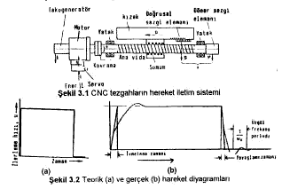
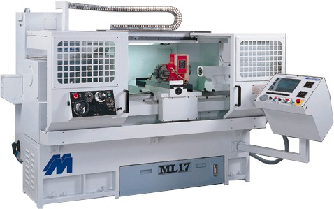
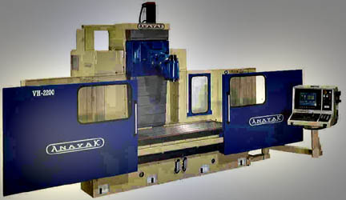

|
2-CNC
TEZGAHLARIN ÜSTÜNLÜKLERÝ
Günümüzde
takým tezgahlarý ve bunlarla birlikte bir çok tertibatlar
ve cihazlar CNC þeklinde yapýlamamaktadýr. Bu nedenle bu hesaplar
kanýmca günceliðim yitirmiþtir. Bununla beraber CNC tezgahlarýn
üstünlüklerini bir daha belirtmekte yarar vardýr:
2.1.
Konvansiyonel tezgahlara göre;
-
Yardýmcý ve hazýrlýk zamanlarýn çok düþük olmasý, prodüktivitenin
önemli þekilde artmasý ve maliyetin azalmasý.
- Daha
yüksek ve özellikle sabit kalite elde edilmesi.
- Daha
az ve basit tutturma tertibatlarýna gereksinme olmasý.
- Çok
karmaþýk parçalarýn, yüksek bir doðrulukla iþlenebilmesi.
2.2.
Mekanik otomat tezgahlara göre;
- Çok
daha esnek olmasý, yani iþleme koþullarýnýn çabuk deðiþtirilebilmesi.
- Ayar
zamanýnýn çok daha kýsa olmasý.
2.3.
CNC tezgahlarýn mahsurlarý
- Daha
hassas olmasý ve dolayýsýyla çevre etkilerine karþý daha
iyi muhafaza edilmesi.
- Bozulma
ihtimallerinin daha büyük olmasý ve ayrýca tamirat için
uzmanlaþmýþ elemanlara ihtiyaç duyulmasý.
- Programlama
için kalifiye elemanlar istemesidir.
Bu
nedenle özellikle ilk olarak CNC tezgahlarým kullanan firmalar,
aþaðýdaki hususlara dikkat etmelidirler:
- Tüm
bölümlerin ve özellikle CNC tezgahý ile yakýn iliþkili olan
personelin,CNC tezgahlar hakkýnda bilgi edinmesi ve bu hususta
personelin eðitilmesine önem verilmelidir.
- Konstrüktörler
ve ressamlar imalat resimlerini CNC tezgahlarýn özelliklerine
göre hazýrlamalýdýrlar.
- Takým
ve tutturma tertibatlarýn CNC tezgahlarda kullanýlmak üzere
bir organizasyon yapýlmalýdýr.
- Tezgahlarýn
bakýmý için özel önlemler alýnmalýdýr.
3.
NC TEZGAHLARININ KONSTRÜKSÝYON ÖZELLÝKLERÝ
3.1
Teorik Esaslar
Takým
tezgahlarýnýn amacý, hammaddeye toleranslarla belirtilen bir
kalitede þekil vermektir. Þekil verme iþlemi, takým ve parçanýn
izafi hareketlerinin sonucu olarak talaþ kaldýrma ile gerçekleþir.
CNC tezgahlarýnda programla belirtilen bu hareketler, tezgahýn
kontrol ünitesi tarafýndan vurgu þeklinde elektronik sinyallere
dönüþtürülür; bu sinyaller motoru ve buna mekanik iletim sistemi
(diþli çark, cývata mekanizmasý vb.) ile baðlý olan kýzaðý
harekete geçirirler. Tezgahýn Þekil 3.1'de gösterilen iletim
semasý dikkate alýnýrsa, bu sistemin hýzý Þekil 3.2a'da gösterildiði
gibi aniden O'dan nominal deðere ulaþmaz. Gerçek hýz-zaman
(u=f(t)) diyagramý Þekil 3.2b'de gösterildiði gibidir.
Burada
hýzýn nominal deðere ulaþma zamanýna gecikme zamaný denilir
ve esasen kýzaðýn konumu bakýmýndan bir hata meydana getirir.
Ayni þekilde durma zamaný da aniden deðil durma zamaný denilen
belirli bir zamandan sonra gerçekleþir. Gecikme ve durma zamanlarý
ivmeleme ve yavaþlama zamanýna baðlýdýr. Bu faktörler küçülürse,
gecikme ve durma zamanlarý büyür ve buna baðlý kýzaðýn konum
hatalarý da büyür.
Yukarýdaki
açýklamalar basit bir þekilde de yorumlanabilir. Bir sisteme
sinyallerin verilmesi ile o sistem aniden harekete geçmez;
sistemin yapýþma baðlý ve konum hatalarýna neden olan bir
gecikme zamanlarý meydana gelir. Buna göre kontrol ünitesinden
gönderilen sinyallerle motor hemen harekete geçmez; ayný þekilde
motorun harekete geçmesi ile kýzak hemen harekete geçmez.
Buna kontrol tekniðinde sistemin cevabý (cevap frekansý) denilir.
Mekanik sistemlerde gecikme zamaný yani kýzaðýn konum hatalarý:
parçalar arasýndaki boþluklara, sistemi
oluþturan parçalarýn rijitliðine, hareket halindeki parçalarýn
kütlelerine, parçalar arasý meydana gelen sürtünmeye ve sönümleme
olayýna baðlýdýr. Bunun yaný sýra bu faktörlerin etkisi altýnda
tezgahta, parça kalitesin! bozan titreþimler de meydana gelebilir;
buna kararsýzlýk denilir. Bu bakýmdan yüksek bir iþleme kalitesi
ve kararlý bir çalýþma için, CNC tezgahlarýnýn þu özelliklere
sahip olmalarý gerekir:
Yüksek
rijitlik;Parçalar arasýnda minimum boþluk;Düþük kütleler ve
momentler;Düþük sürtünme ve uygun bir sönümleme.
3.2 Konstrüksiyon Örnekleri
CNC
tezgahlarýn konstrüksiyonu hakkýnda bir fikir vermek için,
Þekil 3.2'te bir CNC torna tezgahý verilmiþtir. Mekanik otomat
tezgahlarla karþýlaþtýrýldýðýnda CNC tezgahlar konstrüksiyon
bakýmýndan çok daha basit olarak görülmektedir. Ayrýca Þekil
3.4 'te CNC freze tezgahý gösterilmiþtir:

Þekil 3.2

Þekil
3.4
Delikli
plakalar üst ve alt yüzeyleri çok iyi iþlenmiþ, üzerinde delikler
bulunanj, boyutlarý 250 mm x 500mm'ye kadar parça baðlanabilen
dökme demirden yapýlan elemanlardýr. Plakalar çok hassas ve
güvenilir þekilde tezgah tablasýna baðlanýr ve plaka üzerinde
parça turtturulur. Deliklerin bazýlarý saf delik, bazýlarýnda
vida vardýr. Çok iyi iþlenmiþ (taþlanmýþ ) olan saf deliklere
parçanýn konumlandýrýlmasý için pimler yerleþtirilir.
|